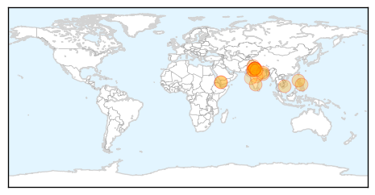
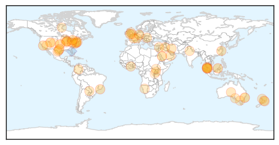
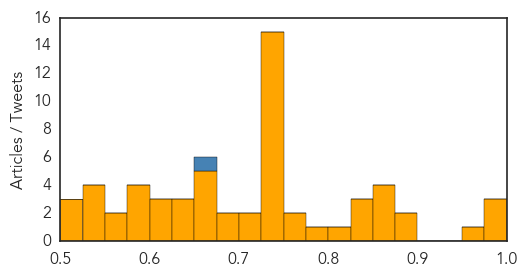

Dengue Fever
30-Day Web Trend
13 alerts, 1 warnings

30-Day Twitter Trend
0 alerts, 0 warnings

Article Locations
Article Confidences

Top Articles:
- 0.998
- Dengue favours K’taka, but Delhi hogs the limelight
- 0.995
- In Faridabad district, number of patients soars to 45
- 0.995
- Dengue fever prevention needs community efforts
- 0.972
- Cavite starts campaign to curb dengue outbreak
- 0.957
- Health Ministry issues fresh advisory to Delhi Govt. on Dengue - India
- 0.949
- Punjab: With 129 dengue cases, Khanna under the scanner
- 0.940
- Avoid platelet transfusion early for dengue, doctors told
- 0.934
- 2 more deaths take dengue toll to 28
- 0.928
- India Had 10,834 Acute Encephalitis Syndrome Cases; 1,652 Japanese Encephalitis Cases
- 0.925
- Dist Hospital gets 50 additional beds
- 0.923
- Japanese Encephalitis a bigger threat than dengue: Jharkhand health dept
- 0.923
- WHO steps up response in Yemen as health facilities continue to shut down
- 0.923
- WHO steps up response in Yemen as health facilities continue to shut down - Xinhua
- 0.912
- Dengue crisis in Delhi deepens: Toll climbs to 28
- 0.911
- Cavite under state of calamity
- 0.885
- Dengue cases in Delhi reaches to 17, toll may go higher
- 0.884
- Dengue toll reaches 27, officials say actual figure could be higher
- 0.844
- Over 700 calls in 4 days to Chandigarh’s dengue helpline
- 0.807
- Union Health Minister reviews facilities for Dengue patients in central government hospitals in Delhi - India
- 0.795
- War against dengue rages on in south Delhi
- 0.768
- Nagpur Today : Nagpur News
- 0.687
- In tackling dengue crisis, govt’s flagship mohalla clinics falter before take-off
- 0.648
- NMC must draft sub-laws for monitoring marriage halls, lawns: Meher
- 0.597
- Corporations wake up to dengue crisis
- 0.580
- Namakmandi serving as breeding ground for mosquitoes
Top Tweets:
-
No tweets found for Sep 23, 2015
Unknown
30-Day Web Trend
0 alerts, 0 warnings

30-Day Twitter Trend
2 alerts, 0 warnings

Article Locations
Article Confidences
Top Articles:
- 0.977
- Six months of preparation for healthy Hajj
- 0.977
- What is Clostridium difficile (C. difficile)?
- 0.977
- Daily Express Newspaper Online, Sabah, Malaysia.
- 0.964
- Iowa and South Dakota the latest states to report Salmonella cases
- 0.885
- 'Super-gonorrhoea' outbreak
- 0.877
- Officials hoping for better results with flu vaccine this season
- 0.866
- Further test results sought in food-borne outbreak
- 0.866
- Legionnaires’ Disease Bacteria Causes Evacuation in Chicago-Area Schools
- 0.863
- Salmonella outbreak in cucumbers kills 3, sickens 558
- 0.860
- Malaysia blames Thai dogs for rabies outbreak
- 0.841
- Avian Flu Scan for Sep 22, 2015
- 0.838
- New clues on the history of the smallpox vaccine virus
- 0.832
- Norovirus Outbreak At Trinity University
- 0.809
- Norwalk Reflector: More than 550 sickened, three fatally, by salmonella-tainted cucumbers
- 0.799
- Cattle disease spread by vets, not cows, suggests new study
- 0.772
- AUDIO: DPH: Even If You're Skeptical After Last Flu Season, Get This Year's Vaccine
- 0.751
- Flinders News> Blog Archive > Lessons from Iran for our public health system
- 0.749
- Malaysia General Business Sports and Lifestyle News
- 0.745
- Three dead as salmonella-tainted cucumber outbreak continues
- 0.740
- Salmonella at CoV in Wayzata, MN Sickens Nine
- 0.732
- 82 Rabies Cases In Penang, Perlis And Kedah
- 0.729
- EU leaders pledge €1 billion in aid for Syrian refugees
- 0.729
- Saudi man faces execution for taking part in anti-government protests
- 0.729
- Putin opens Moscow mosque with Turkish, Palestinian leaders
- 0.729
- Pope's visit ‘worst nightmare’ for New York security
- 0.729
- Paraguay students lay siege to university building over ‘corrupt’ president
- 0.729
- Interim president Kafando 'back in power' after Burkina coup leaders withdraw
- 0.729
- Hungary’s Orban accuses Merkel of ‘moral imperialism’ over refugee quotas
- 0.729
- Egypt frees Al-Jazeera journalists following presidential pardon
- 0.729
- Egypt to buy French Mistral warships originally built for Russia
- 0.729
- Colombian president and FARC rebel chief push for peace in Cuba talks
- 0.729
- Volkswagen CEO Winterkorn resigns over emissions scandal
- 0.715
- No choice but to cull dogs to fight rabies, says vet department
- 0.708
- 82 rabies cases in Penang, Perlis and Kedah
- 0.696
- Health Ministry releases National Health Profile 2015
- 0.690
- Public health advice after a flood
- 0.667
- Preparing to take on flu season
- 0.661
- Lessons from Iran for our public health system
- 0.661
- Mexican cucumbers linked to more than 550 Salmonella illnesses
- 0.660
- Global malaria deaths drop 60% over the last 15 years
- 0.658
- Hospitals with high death rates face scrutiny
- 0.633
- Hospitals with high death rates face scrutiny
- 0.628
- Calicivirus strikes Virginia shelter, resulting in 83 cats being euthanized
- 0.625
- Fresh supply of 300 rabies vaccines arrive in Penang
- 0.625
- The ultimate cold and flu survival guide
- 0.621
- Cucumber-linked salmonella infections rise
- 0.607
- South Sudan: Healing the wounds after Maridi fuel truck explosion
- 0.599
- Patients waiting for days on emergency trolleys to get into hospital: study
- 0.592
- Mom Posts Shocking Photos Warning About the Dangers of Kissing Newborns
- 0.590
- Anonymous confessions are being displayed on a huge board at Brighton train station
Showing top 50 articles...
Top Tweets:
- 0.849
- RT: NEWS SCAN: MERS in Kuwait; Soft palate & flu evolution; Egyptian H5N1 cases; Avian flu in 3 nations; Global flu http://t.co/…
- 0.574
- RT: Hablando en serio, ni se imaginan la calidad de vida, etapas y experiencias, en general, que nos estamos perdiendo por la …
- 0.557
- Acciones de prevención y control de la malaria contribuyen a lograr el desarrollo sostenible y se benefician de él. http://t.co/it82L7AxnL
- 0.538
- RT: Las ganas de partirte la boca de un beso. Una remera que diga... Buen miércoles!!!
- 0.519
- RT: 23 de septiembre de 1973, días después del golpe de Estado en Chile, fallecía el poeta Chileno Pablo Neruda http://t.c…